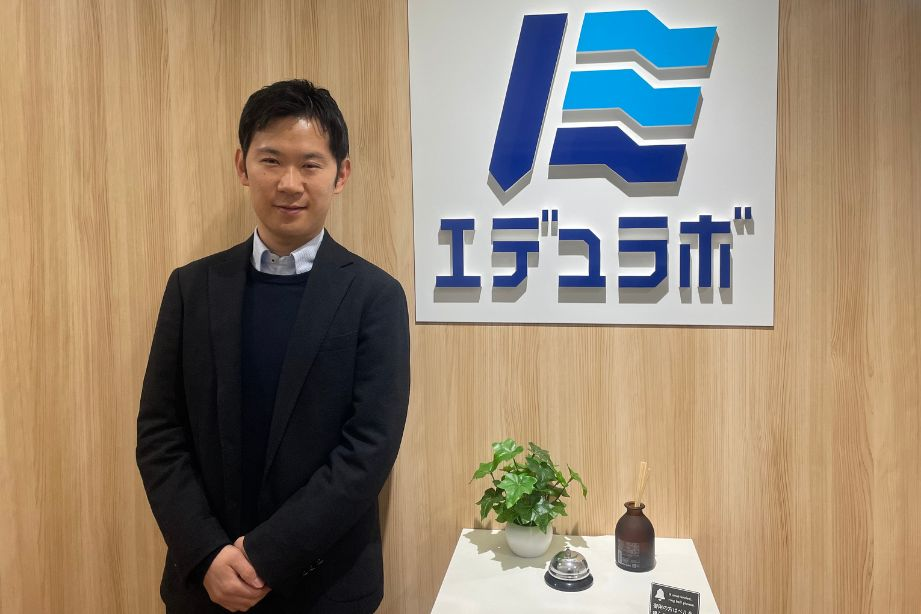
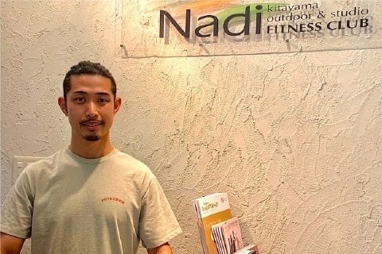

「特殊な業界だからこそ、心強い」
共に課題へ向き合うWeb集客のパートナー
SNSマーケティングとは
SNSマーケティングは、大きく2つに分けられます。
「アカウントを育てる」か「広告で届ける」か。
目標・フェーズ・予算に合わせて、最適な組み合わせをご提案します。
ACCOUNT MANAGEMENT
SNSアカウント運用
Instagram・TikTok・X・YouTube・LINE・noteなどのアカウントを継続的に運用。企画・撮影・動画編集・投稿・分析まで一貫して代行します。フォロワーを増やし、ファンを育て、長期的な集客基盤をつくります。
アカウント運用の詳細を見る
SNS ADVERTISING
SNS広告運用
Instagram広告・TikTok広告・X広告・YouTube広告など各SNSの広告を運用代行。精密なターゲティングで、まだ知らない潜在層に直接届けます。予算設定・クリエイティブ制作・配信設定・レポートまで対応。
SNS広告の詳細を見る
ACCOUNT MANAGEMENT
SNSアカウント運用代行
フォロワーを増やし、
フォロワーを増やし、
ファンを育てる。
投稿するだけでは成果は出ません。企画・撮影・編集・投稿・分析のサイクルを回し、アカウントを資産として育てます。
FOLLOWER GROWTH
フォロワー数の推移
運用開始から6ヶ月間の実績（参考値）
CONVERSION
月間CV数の推移
SNS経由の問い合わせ・予約数（参考値）
01
アカウント解析・戦略設計
現状のアカウント分析・競合調査・ターゲット設定。どのSNSで何を発信するかの戦略を設計します。
02
企画・コンテンツ制作
投稿テーマ・構成・撮影・動画編集・キャプション作成まで対応。バズるコンテンツではなく、売れるコンテンツを設計します。
03
投稿・運用管理
最適な投稿タイミングでの配信管理。コメント対応・DM管理・ハッシュタグ最適化も含めて対応します。
04
レポート・分析改善
月次レポートで数値を可視化。リーチ・エンゲージメント・フォロワー増減・CV数を分析し、次月の施策に反映します。
SUPPORTED PLATFORMS
対応SNSプラットフォーム
各SNSの特性を理解した上で、ビジネス目標に最適なプラットフォームをご提案します。
複数SNSの同時運用も対応可能です。
ビジュアル訴求力が高く、美容・飲食・ファッション・ライフスタイル系に最適。リール動画でリーチ拡大。
TikTok
10〜30代へのリーチ力が圧倒的。短尺動画でバイラル拡散。飲食・エンタメ・教育コンテンツに強い。
X（旧Twitter）
リアルタイム情報拡散に強く、B2B・士業・IT・メディア系に適する。ブランドの専門性を発信。
YouTube
長尺動画で深い信頼構築。SEO効果も高く、教育・専門サービス・ハウツー系コンテンツに最適。
LINE
既存顧客へのリピート促進に最強。開封率が高く、クーポン・予約・リマインドに効果的。
note
長文コンテンツで専門性を発信。SEO効果が高く、B2B・士業・コンサル・教育系に適する。
SNS ADVERTISING
SNS広告運用代行
まだ知らない人に、
まだ知らない人に、
ピンポイントで届ける。
SNS広告は、年齢・性別・興味関心・行動履歴など精密なターゲティングが可能です。アカウント運用では届かない潜在層に、直接リーチします。
CV GROWTH
月間CV数の推移
SNS広告経由のコンバージョン数（参考値）
CPA IMPROVEMENT
CPA（獲得単価）の推移
運用最適化によるCPA改善（参考値）
01
予算設定・ターゲティング設計
目標CPAに合わせた予算配分と、精密なターゲティング設定を行います。
02
クリエイティブ制作
各SNSに最適化した画像・動画広告クリエイティブを制作します。
03
配信設定・最適化
配信開始後も継続的にA/Bテストと入札最適化を実施します。
04
レポート・分析
月次レポートでCV数・CPA・ROAS・インプレッションを可視化します。
FREE CONSULTATION
まず、お話してみませんか。 初回相談は無料です。
「何から始めればいいかわからない」という段階でも構いません。 現状のヒアリングから、最適な施策をご提案します。
無料相談を申し込む
お電話でのご相談
078-806-8338
支援事例
様々な業種・規模での
様々な業種・規模での
SNSマーケティング支援実績。
BEAUTY / SALON
美容サロンのInstagramアカウントを全面リニューアル
課題：フォロワーが増えない。投稿はしているが反応がなく、集客につながっていなかった。
施策：ターゲット設定を見直し、「施術ビフォーアフター」「スタッフの日常」「お客様の声」の3軸で投稿を再設計。リール動画を週2本制作・投稿。
月間フォロワー増加数
BEFORE
120
人 / 月
→
AFTER
890
人 / 月
FOOD & BEVERAGE / RESTAURANT
飲食店のTikTok運用で新規来店客を大幅増加
課題：SNSを活用したいが何をすればいいかわからない。TikTokを始めたが再生数が伸びない。
施策：「調理工程の見せ方」「スタッフのキャラクター訴求」「来店体験の切り取り」でコンテンツを設計。BGM・テロップ・編集テンプレートを統一。
月間SNS経由来店数
BEFORE
8
件 / 月
→
AFTER
64
件 / 月
B2B / PROFESSIONAL SERVICE
士業事務所のInstagram広告でCV単価を大幅改善
課題：SNS広告を出しているが問い合わせにつながらない。クリエイティブが一般的すぎて刺さっていなかった。
施策：「悩み別」「業種別」でクリエイティブを分類。「○○でお困りの方へ」という課題直撃型のコピーに刷新。ターゲティングも見直し。
CPA（問い合わせ1件あたりの広告費）
BEFORE
24,000
円 / 件
→
AFTER
9,800
円 / 件
スワイプして見る
CLIENT VOICES
伴走してきた企業の、
すべて見る
伴走してきた企業の、
リアルな声。

SNS運用で「見てもらえる」から
「選んでもらえる」へ。

正解がない業態だからこそ、
同じ目線で、1つの「チーム」で。
スワイプして見る
運用の進め方
ヒアリングから改善まで、
ヒアリングから改善まで、
一貫してサポート。
「投稿して終わり」にしない。データを見ながら継続的に改善し、SNSを集客の柱に育てます。
01
STEP 01 — ANALYSIS
現状分析・戦略ヒアリング
ビジネス目標・ターゲット・競合アカウント・既存SNSの状況を徹底的にヒアリング。「なぜ成果が出ていないか」の根本原因を特定し、最適なSNS・コンテンツ戦略を設計します。
アカウント診断 / 競合調査 / KPI設定02
STEP 02 — SETUP
コンテンツ設計・制作・配信開始
投稿テーマ・構成・撮影・動画編集・キャプション作成まで対応。プロフィール最適化・ハッシュタグ設計も含め、アカウントの土台を整えてから配信を開始します。
コンテンツ制作 / プロフィール最適化 / 投稿スケジュール管理03
STEP 03 — OPERATION
継続運用・コミュニティ管理
投稿・コメント対応・DM管理・フォロワーとのエンゲージメント維持を継続的に実施。SNSアルゴリズムの変化にも対応しながら、アカウントの成長を維持します。
投稿管理 / コメント対応 / エンゲージメント維持04
STEP 04 — IMPROVEMENT
月次レポート・改善提案
毎月のレポートでリーチ・エンゲージメント・フォロワー増減・CV数を可視化。数値をもとに次月の施策を改善し、PDCAサイクルを回し続けます。
月次レポート / 数値分析 / 改善提案FAQ
よくある質問
Q
SNSマーケティングの運用代行はどのSNSに対応していますか？
Q
SNSマーケティングの運用代行と業務委託の違いは何ですか？
Q
SNSアカウントの運用代行の費用はどのくらいですか？
Q
SNS広告の運用代行も対応していますか？
Q
効果が出るまでどのくらいかかりますか？
YOUR CHALLENGE
あなたの課題は
あなたの課題は
どれですか？
なんかうまくいかない。
WEBで成果が出ない理由は、必ずあります。
課題を特定し、最適な施策を設計します。
01
なんかうまく
いかない...
何が問題かわからない。施策を試しても手応えがない。まず現状を整理したい。
02
サイトへの
訪問者を増やしたい
検索で見つけてもらえない。広告を出しても費用対効果が悪い。もっと多くの見込み客に届けたい。
03
来てくれた人が
問い合わせない
アクセスはあるのに成約しない。サイトを見ても離脱してしまう。訪問者を顧客に変えたい。
04
一度来た人に
また来てほしい
リピーターが増えない。既存顧客との関係を維持したい。ファンを育てる仕組みをつくりたい。
FREE CONSULTATION
まず、お話してみませんか。 初回相談は無料です。
「何から始めればいいかわからない」という段階でも構いません。 現状のヒアリングから、最適な施策をご提案します。
無料相談を申し込む
お電話でのご相談
078-806-8338
AREA
対応エリア
神戸・兵庫を中心に、関西全域・全国のお客さまに対応しています。
SNSマーケティングはオンラインで完結するため、全国どこからでもご依頼いただけます。
対面 / オンライン対応
要相談
オンライン対応
※ SNSマーケティングはオンラインで完結するため、エリアを問わずご依頼いただけます。
SNSマーケティング関連コラム
すべて見るSNS MARKETING
Instagramフォロワーが増えない本当の理由と、改善のための5つのチェックポイント
2025.03.10
SNS MARKETING
TikTok運用代行の費用相場と、失敗しない業者選びの3つのポイント
2025.02.20
SNS MARKETING
SNS広告とリスティング広告の違いを徹底比較。どちらを選ぶべきか？
2025.01.15